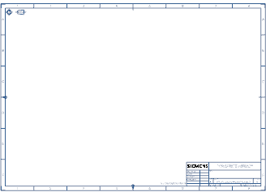
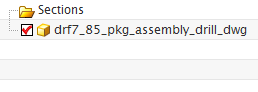

Open the drawing
-
On the Standard toolbar, click Open
 .
.
-
Make sure the Load Structure Only check box is cleared.
-
Select drf7_85_pkg_assembly_drill_dwg, and then click OK.

Sheet “Sheet 1” WorkThe Assembly Navigator
 indicates that currently there are no assembly components in this part.
indicates that currently there are no assembly components in this part.

-
Unpin the navigator to close it.